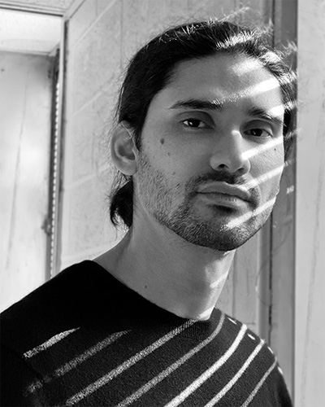
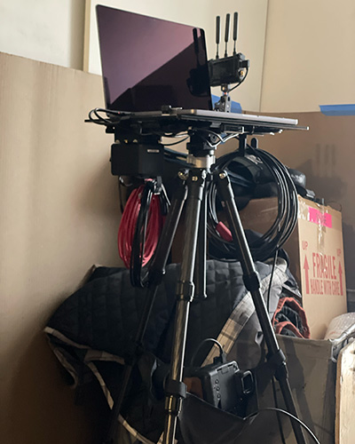
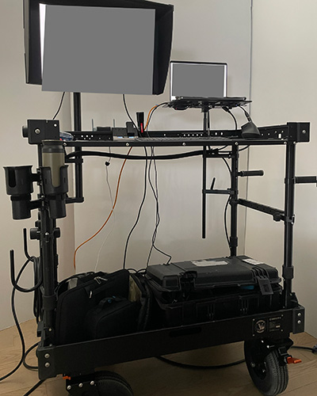
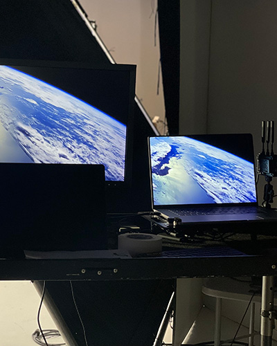
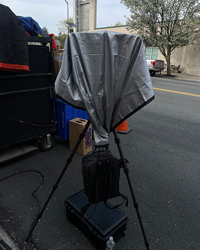

digital tech + lighting, nyc
NYC-based digital technician and lighting director with 16+ years of experience on set across photography and motion.
I love collaborating with photographers, brands, and publications, translating art direction and technical considerations into engaging imagery for projects of varying scale and conceptual intent.

The Met, 9/11 Museum, Christie’s, Sotheby’s, R/GA, Publicis, GREY Advertising, Wieden Kennedy, Johannes Leonardo, New York Presbyterian, Unilever, P&G, Coca Cola, Pepsi, Mars, Sony, Verizon, Samsung, Meta, BMW, American Express, Saint Laurent, Moncler, Calvin Klein, L’Oréal, Estee Lauder, Tiffany & Co, Dior, Adidas, Nike, Victoria’s Secret, J Crew, Macy’s, GAP, Club Monaco, The Children’s Place, Saks Fifth Avenue, The Hollywood Reporter, Vanity Fair, Billboard, Vogue, Harper’s Bazaar, V Magazine, ID Magazine, Paper, GQ, Time, Surface, NYT Magazine, New York Magazine, National Geographic, People, Oprah Magazine, Bon Appétit, Architectural Digest, etc.




Indoors or outdoors, monitors and ipads, on sticks, on wheels, on battery, backups and triple checks of everything.
Mobile or stationary, handheld or fully rigged, we can make it happen smoothly for your productions.
Lighting work samples available upon request.